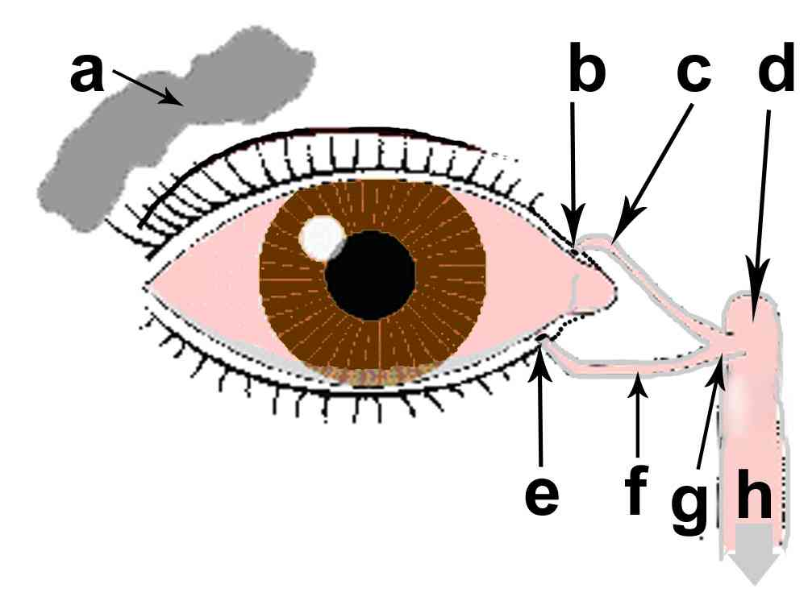

Dacryocystite aiguë
AdulteSpécialité : ophtalmologie /
Points importants
- Inflammation du sac lacrymal
- Secondaire à une obstruction, souvent chronique, des voies lacrymales
- Refroidir en urgence par une antibiothérapie orale
- Contre-indiquer les AINS (favorisent l'évolution vers la cellulite orbitaire)
Présentation clinique / CIMU
SIGNES FONCTIONNELS
Non spécifiques locaux
- Œil non douloureux
- En règle unilatéral
- Pas de vraie baisse d'acuité visuelle mais vision brouillée en raison du larmoiement purulent
Spécifiques
- Larmoiement purulent
- Inflammation de l'angle naso-lacrymal (rougeur, chaleur, oedème++, douleur)
- Signe pathognomonique : douleur à la palpation de l'angle naso-lacrymal et reflux purulent par le méat lacrymal inférieur (au rebord palpébral interne inférieur)
CONTEXTE
Antécédents
- Mucocèle connu (masse tumorale bénigne formée à partir de mucus)
- Obstruction chronique des voies lacrymales
EXAMEN CLINIQUE
- Examen oculo-orbitaire
-
Pression digitale en regard du sac lacrymal inflammatoire (angle interne de l'oeil) à la recherche d'une expression purulente par les méats lacrymaux
-  _620 Système lacrymal
EXAMENS PARACLINIQUES SIMPLES
- Pas d'hyperthermie
- Prélèvement bactérien local non systématique
CIMU
- Tri 5
Signes paracliniques
L'éventuel prélèvement local bactériologique retrouvera
- Staphylocoque aureus
- Haemophilus influenzae
- Streptocoque bêtahémolytique
- Pneumocoque
Diagnostic étiologique
-
Pathologie congénitale :
- Imperforation de la valve de Hasner avec canalisation incomplète des voies lacymales
-
Pathologie lacrymo-nasale sous-jascente :
- Sinusite
- Polypose
- Rétention de corps étranger
- Déviation septale
- Mucocèle éthmoïdienne
- Kyste lacrymal
- Rhinolithe ou dacryolithe (14-16%)
- Aspergillose lacrymale
- Lymphome
- Sténose lacrymo-nasale
- Tumeur lacrymale
-
Granulome...
Diagnostic différentiel
- Cellulite orbitaire
- Chalazion de la paupière inférieure
- Tumeur orbitaire
Traitement
TRAITEMENT EXTRAHOSPITALIER / INTRAHOSPITALIER
- Antibiothérapie simple probabiliste, orale
- Drainage chirurgical secondaire après refroidissement antibiotique de l'infection
- Antalgiques (non AINS)
MEDICAMENTS
- NA (cf. ordonnance de sortie)
Devenir / orientation
CRITERES D'ADMISSION
- Aucun
ORDONNANCE DE SORTIE
- Amoxicilline (Augmentin) : 500 mg x 3/j pendant 10 jours
RECOMMANDATIONS DE SORTIE
-
Avis ophtalmologique après une semaine d'antibiothérapie orale ou à 72h en l'absence d'amélioration sous traitement antibiotique
Mécanisme / description
- L'obstruction chronique des voies lacrymo-nasales entraîne une stase lacrymale propice au développement d'infections locales
- L'évolution peut se faire vers la cellulite orbitaire en cas de retard thérapeutique
-
Il faut prévoir le bilan et le traitement secondaire de l'obstruction lacrymo-nasale chronique responsable :
- dacryorhinocystographie
- TDM
- ± dacryocystorhinostomie externe ou endonasale
Bibliographie
- Fayet B. ; Bernard J.-A . Abcès palpébraux et lacrymaux : Urgences ophthalomologiques. La Revue du praticien, 1995, vol. 45, no4, pp. 461-464
-
Jane Olver. Chirurgie des voies lacrymales. Ed Elsevier Masson ; 2003, pp. 70-79
Auteur(s) : Jean-Louis BOURGES